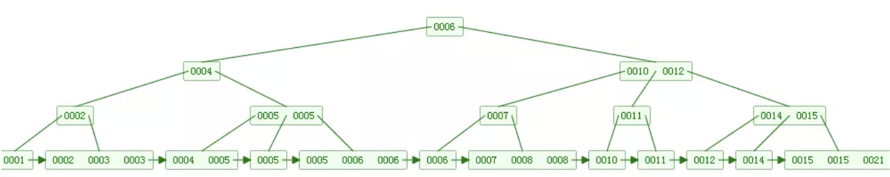

北国风光，千里冰封，万里雪飘。望长城内外，惟余莽莽；大河上下，顿失滔滔。山舞银蛇，原驰蜡象，欲与天公试比高。须晴日，看红装素裹，分外妖娆。江山如此多娇，引无数英雄竞折腰。惜秦皇汉武，略输文采；唐宗宋祖，稍逊风骚。一代天骄，成吉思汗，只识弯弓射大雕。俱往矣，数风流人物，还看今朝。 —— 毛泽东 《沁园春·雪》
索引基础
一、基础
定义：索引是加速查询的数据结构，是一个排序的列表，在这个列表中存储着索引的值和包含这个值的数据所在行的物理地址。在数据十分庞大的时候，索引可以大大加快查询的速度，这是因为使用索引后可以不用扫描全表来定位某行的数据，而是先通过索引表找到该行数据对应的物理地址然后访问相应的数据。
- 索引的出现其实就是为了提高数据查询的效率，就像书的目录一样
分类
按聚簇
- 聚簇索引(主键索引)
- 非聚簇索引(普通索引)
按字段
- 单列索引
- 联合索引
按类型
- 主键索引
- 唯一索引
- 普通索引
- 全文索引
使用
添加索引
- 直接添加索引
CREATE INDEX indexName ON tb(columnName(length))- 如果是CHAR，VARCHAR类型，length可以小于字段实际长度；如果是BLOB和TEXT类型，必须指定length。
- 不可直接添加主键索引
- 修改表时添加
ALTER TABLE tb ADD 索引 (columnName)- PRIMARY KEY | UNIQUE index_name | INDEX index_name | FULLTEXT index_name
- 创建表时添加
1
2
3
4
5CREATE TABLE tb(
ID INT NOT NULL PRIMARY KEY auto_increment,
username VARCHAR(16) NOT NULL,
INDEX [indexName] (username(length))
);- 直接添加索引
删除索引
- 直接删除
DROP INDEX [indexName] ON tb - 修改删除
ALTER TABLE tb DROP INDEX indexName;- 删除主键
ALTER TABLE tb DROP PRIMARY KEY
- 删除主键
- 直接删除
查看索引
SHOW INDEX FROM tb;\G
对比
- 主键索引和唯一索引
- 主键是一种约束，唯一索引是一种索引，两者在本质上是不同的
- 主键创建后一定包含一个唯一性索引，唯一性索引并不一定就是主键
- 主键列不允许为空值，唯一性索引列允许空值
- 主键列在创建时，已经默认为非空+唯一索引
- 主键可以被其他表引用为外键，而唯一索引不能
- 一个表最多只能创建一个主键，但可以创建多个唯一索引
- 主键更适合那些不容易更改的唯一标识，如自动递增列、身份证号等
- 主键索引和唯一索引
使用范围条件而不是相等条件检索数据并请求共享或排他锁时，InnoDB会给符合条件的已有数据记录的索引项加锁。对于键值在条件范围内但并不存在的记录，叫做”间隙(GAP)”，InnoDB也会对这个“间隙”加锁，这种锁机制就是所谓的间隙锁(Next-Key锁)。
二、扩展
- 支持索引的数据结构
- hash索引 无法满足范围查找。哈希索引基于哈希表实现，只有精确匹配索引所有列的查询才有效。
- 二叉树、红黑树
[复杂度O(h)]导致树高度非常高(平衡二叉树一个节点只能有左子树和右子树),逻辑上很近的节点（父子）物理上可能很远，无法利用局部性，IO次数多查找慢,效率低。todo 逻辑上相邻节点没法直接通过顺序指针关联，可能需要迭代回到上层节点重复向下遍历找到对应节点，效率低 - B-Tree:每个节点都是一个二元数组: [key, data]，所有节点都可以存储数据。key为索引key,data为除key之外的数据。
- 检索原理：首先从根节点进行二分查找，如果找到则返回对应节点的data，否则对相应区间的指针指向的节点递归进行查找，直到找到节点或未找到节点返回null指针。
- 缺点：
- 插入删除新的数据记录会破坏B-Tree的性质，因此在插入删除时需要对树进行一个分裂、合并、转移等操作以保持B-Tree性质造成IO操作频繁
- 区间查找可能需要返回上层节点重复遍历，IO操作繁琐
- B+Tree: 与B-Tree相比，B+Tree有以下不同点：
- 非叶子节点不存储data，只存储索引key
- 只有叶子节点才存储data

Mysql中B+Tree在经典B+Tree的基础上进行了优化，增加了顺序访问指针，即在B+Tree的每个叶子节点增加一个指向相邻叶子节点的指针，就形成了带有顺序访问指针的B+Tree。
- 哈希索引和B+树对比
- 等值查询哈希索引效率高
- 哈希索引不支持范围查询
- 哈希索引不支持模糊查询
- 哈希索引不支持排序
- 哈希索引不支持联合索引最左匹配规则
- 大量重复键值情况下哈希索引的效率极低(哈希碰撞)
- B+树索引的关键字检索效率比较平均
- B树、B+树
三、ICP索引条件下推
- 在MySQL5.6引入了索引下推优化(index condition pushdown)，简称ICP，是指在索引遍历过程中对索引中包含的字段先做判断，直接过滤掉不满足条件的记录，减少回表次数。
- 存储引擎层根据索引尽可能的过滤数据，然后再返回给服务器层根据where其他条件进行过滤。
1 | Index Condition Pushdown (ICP) is an optimization for the case where MySQL retrieves rows from a table using an index. Without ICP, the storage engine traverses the index to locate rows in the base table and returns them to the MySQL server which evaluates the WHERE condition for the rows. With ICP enabled, and if parts of the WHERE condition can be evaluated by using only columns from the index, the MySQL server pushes this part of the WHERE condition down to the storage engine. The storage engine then evaluates the pushed index condition by using the index entry and only if this is satisfied is the row read from the table. ICP can reduce the number of times the storage engine must access the base table and the number of times the MySQL server must access the storage engine. |
开启/关闭
set optimizer_switch='index_condition_pushdown=on/off';使用场景
- ICP is used for the range, ref, eq_ref, and ref_or_null access methods when there is a need to access full table rows.
- ICP can be used for InnoDB and MyISAM tables, including partitioned InnoDB and MyISAM tables.
- For InnoDB tables, ICP is used only for secondary indexes. The goal of ICP is to reduce the number of full-row reads and thereby reduce I/O operations. For InnoDB clustered indexes, the complete record is already read into the InnoDB buffer. Using ICP in this case does not reduce I/O.
- ICP is not supported with secondary indexes created on virtual generated columns. InnoDB supports secondary indexes on virtual generated columns.
- Conditions that refer to subqueries cannot be pushed down.
- Conditions that refer to stored functions cannot be pushed down. Storage engines cannot invoke stored functions.
- Triggered conditions cannot be pushed down.
使用
- 初始化表
1
2
3
4
5
6
7
8CREATE TABLE `user` (
`id` int(11) NOT NULL AUTO_INCREMENT,
`name` varchar(32) DEFAULT NULL,
`age` int(11) DEFAULT NULL,
`ismale` tinyint(1) DEFAULT NULL,
PRIMARY KEY (`id`),
KEY `name_age` (`name`,`age`)
) ENGINE=InnoDB- 初始化数据
INSERT INTO user(name,age,ismale) VALUES('张三',10,1),('张三',10,1),('张三',10,2),('张三',20,1),('李四',10,1),('李四',10,1); - 查询SQL
select * from user where name like '张 %' and age=10 and ismale=1;，此查询语句会在索引内部先过滤掉age不等于10的记录，然后再进行回表
如何建索引
一、基本原则
- 对查询频次较高且数据量比较大的表建立索引
- 加索引的字段一般从where子句的条件中提取，如果where子句中的组合比较多则应当挑选最常用过滤效果最好的列的组合
- 如果where后有多个条件经常被用到，建议建立
复合索引，要遵循最左前缀法则，N个列组合而成的复合索引相当于创建了N个索引 - 字段的值具有唯一性的一般建议加唯一索引
- 索引并非越多越好，如果该表增删改操作较多则应慎重建立索引，过多索引会降低表维护效率
- 使用短索引提高索引访问时的I/O效率
- 多表连接的字段上一般应建立索引
- 排序字段添加索引能提高查询效率
- 不要在索引上使用运算，否则索引也会失效
- 字符串不加引号造成索引失效
- 尽量使用覆盖索引，避免
select * or关键字连接一般索引都会失效like模糊查询的优化- 经常GROUP BY和ORDER BY的列建议加索引
- 加了索引还是慢的排查技巧
二、参考
MySQL执行计划
一、explain
使用
explain SQL语句;- 不单单select，insert/delete/update语句都可使用
返回
1 | id: 1 |
- 作用
- 查看SQL索引使用情况
- 查看联接查询执行顺序
- 查询扫描的数据行数
二、profiling
查看profiling状态
show variables like 'profiling';，默认关闭开启profiling
set profiling=1，接下来写query语句都会被记录查看所有profiling
show profiles;查看profiling
show profile [type] id for query [ID];，其中type值可以为：- all：显示示所有的开销信息
- block io：显示块IO相关开销
- context switches：上下文切换相关开销
- cpu：显示CPU相关开销信息
- ipc：显示发送和接收相关开销信息
- memory：显示内存相关开销信息
- page faults：显示页面错误相关开销信息
- source：显示和Source_function，Source_file，Source_line相关的开销信息
- swaps：显示交换次数相关开销的信息
作用：记录SQL语句资源开销，如IO，上下文切换，CPU，Memory等
三、optimizer_trace
- 查看optimizer_trace状态
show variables like 'optimizer_trace';，默认enabled=off,one_line=off - 开启optimizer_trace
set optimizer_trace='enabled=on';set optimizer_trace="enabled=on",end_markers_in_json=on;
- 查询optimizer_trace表
select trace from information_schema.optimizer_trace\G; - 导入文件，通过工具查看
select trace into dumpfile 'test.trace' from information_schema.optimizer_trace\G;- ERROR 1290 (HY000): The MySQL server is running with the –secure-file-priv option so it cannot execute this statement，查看
show variables like 'secure_file_priv';，将此值更改为某个路径或置为空即可(需要修改my.cnf，命令行不可修改)- secure_file_priv为 NULL 时，表示限制mysqld不允许导入或导出。
- secure_file_priv为 /tmp 时，表示限制mysqld只能在/tmp目录中执行导入导出，其他目录不能执行。
- secure_file_priv没有值时，表示不限制mysqld在任意目录的导入导出。
- ERROR 1290 (HY000): The MySQL server is running with the –secure-file-priv option so it cannot execute this statement，查看
四、参考
key_len计算方法
- mysql版本5.7.26(
select version())，编码方式utf8(show variables like '%char%')
1 | ## 不允许为null |
计算
char
- 允许为null
explain select * from key_length_table where name='张三',key_len = 31 = 10*3+ 1 - 不允许为null
explain select * from key_length_table where name='张三',key_len = 30 =10*3utf8编码下一个字符(中/英)占3个字节，char(10)代表的是10个字符占30个字节，null占1个字节，char类型不需要额外的字节来存储值的的长度
- 允许为null
varchar
- 允许为null
explain select * from key_length_table where addr='北京市海淀区',key_len = 153 = 50*3 + 1 + 2 - 不允许为null
explain select * from key_length_table where addr='北京市海淀区',key_len = 152 = 50*3 + 2utf8编码下一个字符(中/英)占3个字节，varchar(50)就是50个字符占150个字节，null占一个字节，以及varchar类型需要额外的1~2(长度超过255时需要2个字节)字节来存储值的的长度
- 允许为null
联合索引
1 | CREATE TABLE `multi_union_index_table` ( |
explain SELECT * FROM multi_union_index_table WHERE name=’张三’ AND nick=’张山’ AND age=10 AND sex=1 AND addr=’北京’ AND phone=’18888888888’ AND created=’2019-06-19 15:26:06’ AND modified=’2019-06-19 15:26:06’ \G;
1 | id: 1 |
263 = 20*3+1 + 20*3 + 4+1 + 4 + 20*3+2+1 + 20*3+2 + 4 + 4
结论
- key_len长度的计算是以
字节为单位 - 如果列可以为空，则在数据类型占用字节的基础上加1，如int型不能为空key_len为4，可以为空key_len为5
- 如果列是变长的，则在数据列所占字节的基数上再加2，如varbinary(10)不能为空则key_len为10+2，可以为空则key_len为10+2+1
- 如果是字符型则还需要考虑字符集，如某列的定义是varchar(10)且是utf8，不能为空则key_len为
10*3+2，可以为空则key_len为10*3+2+1 - 使用变长字段需要额外增加2个字节，使用NULL需要额外增加1个字节，因此对于是索引的字段，最好使用定长和NOT NULL定义，提高性能
- key_len长度的计算是以
疑问
utf8字符集，一个英文字符占一个字节，一个中文字符占3个字节，那为啥计算key_len的时候统一按
字符数*3的形式？key_len显示的值为索引字段的最大可能长度，并非实际使用长度，即key_len是根据定义计算而得，不是通过表内检索出的
特殊索引
一、覆盖索引
- 如果一个索引包含(或覆盖)所有需要查询的字段的值，称为‘覆盖索引’，即只需扫描索引而无须回表。
- 由于普通索引存储的是主键的值，通过普通索引查找时先拿到主键的值，通过回到主键索引树搜索的过程，我们称为回表.
- 优点：
- 索引条目通常远小于数据行大小，只需要读取索引，则mysql会极大地减少数据访问量。
- 因为索引是按照列值顺序存储的，所以对于IO密集的范围查找会比随机从磁盘读取每一行数据的IO少很多。
- 一些存储引擎如myisam在内存中只缓存索引，数据则依赖于操作系统来缓存，因此要访问数据需要一次系统调用
- innodb的聚簇索引，覆盖索引对innodb表特别有用。(innodb的二级索引在叶子节点中保存了行的主键值，所以如果二级主键能够覆盖查询，则可以避免对主键索引的二次查询)
- 覆盖索引必须要存储索引列的值，而哈希索引、空间索引和全文索引不存储索引列的值，所以mysql只能用B-tree索引做覆盖索引。
- 覆盖索引就是从索引中直接获取查询结果，要使用覆盖索引需要注意：
- select查询列中包含在索引列中
- where条件包含索引列或者复合索引的前导列
- 查询结果的字段长度尽可能少。
- 使用
- 如身份证号是每个人的唯一标识，如果有根据身份证号查询市民信息的需求，只要在身份证号字段上建立索引就够了。然后如果要根据市民的身份证号查询他的姓名，这个联合索引就有意义了。它可以在这个高频请求上用到覆盖索引，不再需要回表查整行记录，减少语句的执行时间。
二、前缀索引
三、联合索引
联合索引又叫复合索引，对于联合索引，MySQL从左到右的使用索引中的字段，一个查询可以只使用索引中的一部份，但只能是最左侧部分，即最左原则。
- 联合索引其实就是建了一棵索引树，索引项会先根据第一个索引列进行排序，第一个索引列相同的情况下，会再按照第二个索引列进行排序，依次类推。例如有
(1,1),(2,2),(2,1),(1,2)四条记录，那在索引树中的叶子节点的数据顺序就是(1,1),(1,2),(2,1),(2,2)，这也是为什么查询复合索引的前缀是可以用到索引的原因 - 根据官方文档的介绍，联合索引最多可包含16个字段
- 联合索引其实就是建了一棵索引树，索引项会先根据第一个索引列进行排序，第一个索引列相同的情况下，会再按照第二个索引列进行排序，依次类推。例如有
测试
- 创建表
1 | CREATE TABLE `table_multi_union_index` ( |
- 初始化记录
1 | INSERT INTO `table_multi_union_index` VALUES (1, 'tom', 'tt', 10, '北京', '18888888888', '2019-09-06 16:30:51', '2019-06-19 15:26:06'); |
- 查询
- normal query:
explain select * from table_multi_union_index where name='tom' and nick='tt' and age=10\G; - first one:
explain select * from table_multi_union_index where name='tom'\G; - first two:
explain select * from table_multi_union_index where name='tom' and nick='tt'\G; - first one and three:
explain select * from table_multi_union_index where name='tom' and age=10\G;，此查询用到了索引条件下推技术，就是存储引擎层根据索引尽可能的过滤数据，然后再返回给服务器层根据where其他条件进行过滤。
- normal query:
- 几种情况
- 建库
create database if not exists multi_index default charset utf8 collate utf8_general_ci; - 建表
- 建库
1 | create table multi_index_abc( |
- 定义存储过程
- 存储过程名后需要加()，即相当于一个自定义函数
- 定义存储过程前修改下结束符以便执行
- 声明变量时需要指定变量类型
1 | delimiter $$ |
- 执行存储过程
1 | delimiter ; |
联合索引abc
- 开启资源消耗情况
set profiling = on; - 查看此选项设置
show variables like '%prof%'; - 开启优化器跟踪
set optimizer_trace="enabled=on"; - 查看此选项设置
show variables like 'optimizer_trace'; - 执行查询语句：
select * from multi_index_abc where a='0716e89340d1d57f91b9' and b='1b330994f598890c1ca5' and c='8a4ef874d7dc0a447c49'\G - 查看索引情况
explain select * from multi_index_abc where a='0716e89340d1d57f91b9' and b='1b330994f598890c1ca5' and c='8a4ef874d7dc0a447c49'\G - 查看所有执行语句信息
show profiles\G'SHOW PROFILES' is deprecated and will be removed in a future release. Please use Performance Schema instead
- 查看某个具体query id资源使用情况
show profile all for query 3 \G - 查看optimizer_trace
SELECT trace FROM information_schema.OPTIMIZER_TRACE \G或SELECT TRACE INTO outfile '/path/yourfile' FROM INFORMATION_SCHEMA.OPTIMIZER_TRACE;，后者报错：ERROR 1290 (HY000): The MySQL server is running with the --secure-file-priv option so it cannot execute this statement- 查看选项配置
show variables like 'secure_file_priv';- secure_file_prive=null –– 限制mysqld 不允许导入导出
- secure_file_priv=/path/ —— 限制mysqld的导入导出只能发生在默认的/path/目录下
- secure_file_priv=’’ —— 不对mysqld 的导入 导出做限制
- 尝试修改此选项
set global secure_file_priv='';，报错ERROR 1238 (HY000): Variable 'secure_file_priv' is a read only variable，则去修改MySQL配置文件(MySQL5.7在mac下没有此文件，解决方法见下篇【mac下无mysql配置文件my.cnf】)
- 查看选项配置
- 假设你已经更改
secure_file_priv，重新执行SELECT TRACE INTO outfile '/path/yourfile' FROM INFORMATION_SCHEMA.OPTIMIZER_TRACE;，内容省略
- 开启资源消耗情况
通过联合索引abc查询，查询顺序cba(acb/bca/bac/cab)
- 执行查询语句：
select * from multi_index_abc where c='8a4ef874d7dc0a447c49' and b='1b330994f598890c1ca5' and a='0716e89340d1d57f91b9'\G - 查看索引情况
explain select * from multi_index_abc where c='8a4ef874d7dc0a447c49' and b='1b330994f598890c1ca5' and a='0716e89340d1d57f91b9'\G - 查看所有执行语句信息
show profiles\G，同上可拿到query ID'SHOW PROFILES' is deprecated and will be removed in a future release. Please use Performance Schema instead
- 查看某个具体query id资源使用情况
show profile all for query 14 \G，内容省略 - 查看optimizer_trace
SELECT trace FROM information_schema.OPTIMIZER_TRACE \G或SELECT TRACE INTO outfile '/path/yourfile' FROM INFORMATION_SCHEMA.OPTIMIZER_TRACE;，内容省略
- 执行查询语句：
通过联合索引abc查询，查询顺序ab，order by c
- 执行查询语句：
select * from multi_index_abc where a='0716e89340d1d57f91b9' and b='1b330994f598890c1ca5' order by c \G - 查看索引情况
explain select * from multi_index_abc where a='0716e89340d1d57f91b9' and b='1b330994f598890c1ca5' order by c \G- Extra: Using index condition，即用到了索引条件下推ICP(Index Condition Pushdown)
- 查看所有执行语句信息
show profiles\G，同上可拿到query ID'SHOW PROFILES' is deprecated and will be removed in a future release. Please use Performance Schema instead
- 查看某个具体query id资源使用情况
show profile all for query 22 \G，内容省略 - 查看optimizer_trace
SELECT trace FROM information_schema.OPTIMIZER_TRACE \G或SELECT TRACE INTO outfile '/path/yourfile' FROM INFORMATION_SCHEMA.OPTIMIZER_TRACE;，内容省略
- 执行查询语句：
联合索引ab
通过联合索引abc查询，查询顺序ab，order by c
执行查询语句：
select * from multi_index_ab where a='5f315b047b87d57bae65' and b='09aaf7fc89949acf3bc1' order by c \G查看索引情况
explain select * from multi_index_ab where a='5f315b047b87d57bae65' and b='09aaf7fc89949acf3bc1' order by c \G- Extra: Using index condition；; Using filesort即用到了索引条件下推ICP(Index Condition Pushdown)和排序
查看所有执行语句信息
show profiles\G，同上可拿到query ID'SHOW PROFILES' is deprecated and will be removed in a future release. Please use Performance Schema instead
查看某个具体query id资源使用情况
show profile all for query [ID] \G查看optimizer_trace
SELECT trace FROM information_schema.OPTIMIZER_TRACE \G或SELECT TRACE INTO outfile '/path/yourfile' FROM INFORMATION_SCHEMA.OPTIMIZER_TRACE;，内容省略
联合索引优化
联合索引
abc- 定义表
1
2
3
4
5
6
7create table union_utf8_abc(
id int(11) unsigned not null primary key auto_increment,
a int(11) unsigned not null,
b char(20) not null,
c char(20) not null,
key `union_abc`(`a`,`b`,`c`) using btree
)engine=innodb default charset=utf8;- 初始化数据
1
2
3
4
5
6
7
8
9
10
11
12
13
14delimiter $$
create procedure init_abc()
begin
declare i int;
set i=1;
while(i<100000)do
insert into union_utf8_abc(a,b,c) value(i,substring(md5(rand()),1,20),substring(md5(rand()),1,20));
set i=i+1;
end while;
end $$
delimiter ;
call init_abc();- 其中有一条记录如下：
|id | a | b | c |
| :-- | :-- | :-- | :-- |
| 207 | 207 | 3a97053e9cdee1f1cc94 | 2c70269da1b829b39384 |
* 执行查询`explain select * from union_utf8_abc where a>100 and b='3a97053e9cdee1f1cc94' and c='2c70269da1b829b39384'\G;`
* show warnings\G
* 改变where顺序`explain select * from union_utf8_abc where b='3a97053e9cdee1f1cc94' and c='2c70269da1b829b39384' and a>100\G`
* show warnings\G
* 修改字段a的类型为char(20) `alter table union_utf8_abc modify column a char(20) not null;`
* 执行查询`explain select * from union_utf8_abc where a>100 and b='3a97053e9cdee1f1cc94' and c='2c70269da1b829b39384'\G`
* `show warnings\G;`
* 改变where顺序`explain select * from union_utf8_abc where b='3a97053e9cdee1f1cc94' and c='2c70269da1b829b39384' and a>100\G`联合索引
bca定义表
1
2
3
4
5
6
7create table union_utf8_bca(
id int(11) unsigned not null primary key auto_increment,
a int(11) unsigned not null,
b char(20) not null,
c char(20) not null,
key `union_bca`(`b`,`c`,`a`) using btree
)engine=innodb default charset=utf8;初始化数据
1
2
3
4
5
6
7
8
9
10
11
12
13
14delimiter $$
create procedure init_bca()
begin
declare i int;
set i=1;
while(i<100000)do
insert into union_utf8_bca(a,b,c) value(i,substring(md5(rand()),1,20),substring(md5(rand()),1,20));
set i=i+1;
end while;
end $$
delimiter ;
call init_bca();其中有一条记录如下：
|id | a | b | c |
| :-- | :-- | :-- | :-- |
| 207 | 207 | 9bddfde911497271c54d | 8f6bdfcfcbb4928a4ce9 |
* 执行查询`explain select * from union_utf8_bca where a>100 and b='9bddfde911497271c54d' and c='8f6bdfcfcbb4928a4ce9'\G`
* show warnings\G
* 调换where顺序，执行查询`explain select * from union_utf8_bca where b='9bddfde911497271c54d' and c='8f6bdfcfcbb4928a4ce9' and a>100\G`
* show warnings\G
* 修改字段a的类型为char(20)`alter table union_utf8_bca modify column a char(20) not null;`
* 执行查询`explain select * from union_utf8_bca where a>100 and b='9bddfde911497271c54d' and c='8f6bdfcfcbb4928a4ce9'\G`
* show warnings\G
* 改变where顺序`explain select * from union_utf8_bca where b='9bddfde911497271c54d' and c='8f6bdfcfcbb4928a4ce9' and a>100\G`
* show warnings\G联合索引xyz的一种情况
x=1 and y>1 and c=1，会用到前缀索引xy